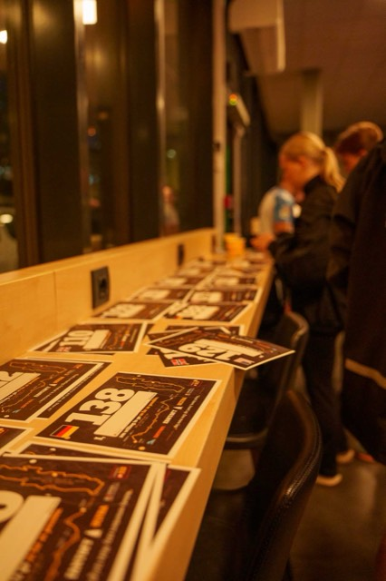
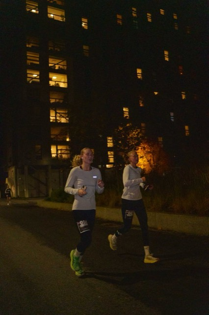
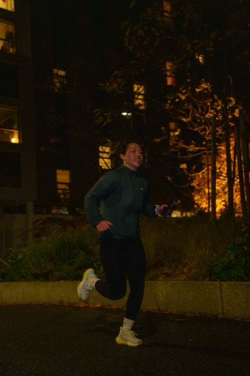
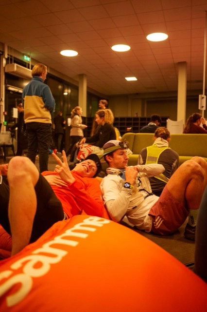
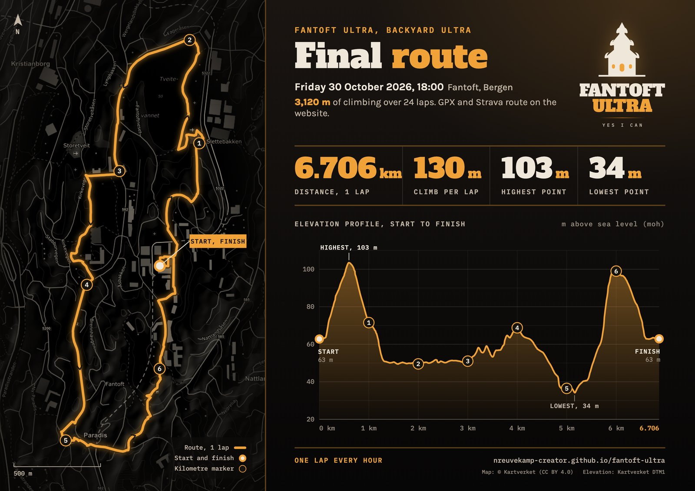
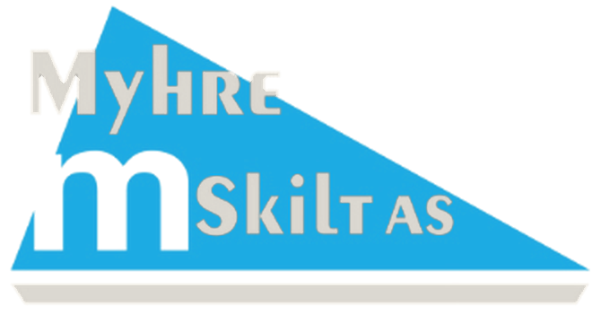

Fantoft · Bergen · 60°22′N
Yes I Can.
Thank you. On 30 October about 200 of us went into the dark together. Gabriel Bjørkhaug was the last one standing.
The start, the bell, the rain and the very last laps. Open any photo and download it. Free to use for yourself; please credit EDF visuals when you post one.




A big thank you to EDF visuals for the photos. Follow them on Instagram: @EDF_HANDLE
The first lap, we all went out as one group. No pace, no racing, no getting dropped — we walked and ran it together and talked the whole way round.
At six in the evening at the end of October in Bergen, it is already dark. So that first lap took us straight into the night, together. That is the whole idea, and it stays the idea for 2027: you head into the dark with a couple of hundred other people instead of on your own.
6.706 km. Every hour, on the hour. Finish your lap, come back to the bell, wait for the next hour, go again. Whatever time you have left before the bell is yours — to eat, to sit down, to change your socks, to talk nonsense.
When you don’t make it back in time, or you decide you’re done, you’re out. The last one standing wins. Everyone else gets a DNF. Yes, everyone. That is genuinely how this format works, and it is half the fun of it.
Let’s be honest about what this is. It is a bell, a loop around Fantoft, something warm to drink, and a group of people finding out what they are up for. The winning is a side effect.
You do not have to be a runner. You can walk the whole lap. You can stop after one and stay for the rest of the night with a cup of something, counting the others through. Nobody will ask you why you stopped.
What we wanted was 200 people on the start line at 18:00. About 200 of you turned up, in the rain, in the dark. In 2027 we would like to do that again.
Pick something to aim at. Nobody holds you to it.
| Lap | Starts | Total | Which is |
|---|---|---|---|
| 1 | Fri 18:00 | 6.7 km | All of us, together, in the dark |
| 3 | Fri 20:00 | 20.1 km | Around half-marathon distance |
| 5 | Fri 22:00 | 33.5 km | Further than most people ever run |
| 7 | Sat 00:00 | 46.9 km | Past a marathon. Midnight. |
| 12 | Sat 05:00 | 80.5 km | The hard part. Nobody feels good here. |
| 15 | Sat 08:00 | 100.6 km | Daylight comes back |
| 19 | Sat 12:00 | 127.4 km | A full day since the bell |
| 20 | Sat 13:00 | 134.1 km | Where Gabriel Bjørkhaug won 2026 |
| 24 | Sat 17:00 | 160.9 km | 100 miles — and it gets dark again |
For scale: the world record is over 100 laps. We are not going there. Probably. In 2026 it took 20.
The last one standing gets a Fantoft Ultra shirt, printed afterwards with the number of laps it took to win it. That is the complete prize list. In 2026 it went to the legend Gabriel Bjørkhaug, for 20 laps, with fellow legend Oliver Reitan Zinow taking the assist.
No medals, no goodie bags, no finisher photos you have to buy. We are keeping this deliberately cheap so that turning up can stay free — what money there is goes on the food table, not on merchandise. Everyone who isn’t the winner gets a DNF and the story about the night it took.
The loop we ran in 2026, starting and finishing at Fantoft: 6.706 km with about 130 m of climbing per lap, between 34 and 103 m above sea level. Run 15 laps and you have done 100 km and around 2,000 m of climbing; run 24 and it is 3,120 m.

On Strava, search for “Fantoft Ultra 2026 Official”. The GPX works in Garmin, Coros, Suunto and most route apps. The 2027 route is confirmed closer to the day.
Prepare for the worst. Rain, wind, wet leaves, darkness, and a temperature that feels a lot colder at 04:00 than it did at 18:00. Come dressed for the night you would least like to have.
You are running in the dark for most of this. Bring spare batteries if you have them.
Not optional in Bergen in October. Something with a hood that you can move in.
Dry socks and a dry layer between laps change everything. Leave the bag at the start.
At 03:00 you will not want a gel. You will want the thing you eat when you’re sad.
If we wanted to make this easy, we would have organised a 5K.
Fantoft Ultra
Lap 1 costs you nothing. Turning up, running one lap in the dark with everyone else and going home again is free, and it stays free. We are not selling entries here.
If you stay into the night you will be eating and drinking from our table for hours, and that food has to come from somewhere — so the people who stay chip in for it. Roughly: nothing for the first couple of laps, a little if you are still with us after 20:00, a bit more if you are also there for breakfast. Everyone pays for their own night. It is not an entry fee, and it is nowhere near what a real ultra charges.
That is how it worked in 2026, and the plan for 2027 is the same; exact amounts follow closer to the day. There is a shop a few minutes away, so if there is one specific thing you will want at 03:00, bring it or tell us about it.
Yes, and you’re exactly who we’re trying to get on the start line. Lap 1 is 6.7 km, in a group, at conversation pace. Do that and you have taken part in an ultra.
Completely. The only thing that matters is being back before the bell. Plenty of people walk laps late in a backyard ultra anyway.
Then you did one lap. That is a full entry and nobody thinks less of it. Stay at the finish, get something warm, and cheer the rest through the night.
There is no entry fee, and lap 1 is free for everyone. If you stay into the night there is a small shared contribution for the food table — a fraction of what a real ultra charges you. Exact amounts follow closer to the day.
Please do — that’s the entire plan. Bring the ones who say they hate running too; they’re usually the ones who end up doing four laps.
It will be. We start anyway. That is the deal you’re signing up for, and it is a much better story afterwards.
Planned for Friday 29 October 2027, 18:00, at Fantoft. We aim for the last Friday of October. Fill in the interest form and we will let you know once it is confirmed.
No timing chips, no medals, no entry fee. A bell, a measured loop, and someone counting laps. In practice: a night out with a hill in it.
Planned · Fri 29 Oct 2027 · 18:00 · Fantoft
Tell us you’re in for 2027, or that you’d like to help make it happen. One short form for both.
Non-binding. We let you know once 2027 is confirmed.
Also join the Fantoft Ultra club on Strava. That’s where the 2026 laps are, and where the build-up to 2027 will happen.
Joining the club is free.
With thanks to

Posthuset, for staying open especially for us
Myhre Skilt, for the extra buffs that kept everyone a bit warmer, and for engraving the winner’s prize